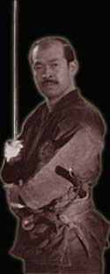

What is a Ninja?
Surrounded by myth and legend, there is much controversy regarding the actual abilities and skills posessed by the ninja. When speaking of Ninja, the image of a black clad assassin disappearing in a cloud of smoke comes to mind. This distortion, to some extent a creation of the movie industry, has nothing to do with the reality of studying Ninpo. Contrary to popular belief it was not "supernatural" abilities which made the ninja invincible, rather it was their ability to unite the physical, mental and spiritual in harmony with the laws of nature. A true ninja possesses a compassionate heart and pursues peace and harmony, an attitude called the spirit of 'Ninniku'.
The origins of Ninjutsu; developed over time in remote mountainous regions of Japan constantly in contact with nature, go some way to explaining this attitude. The ninja's beliefs were originally based on holding all life as sacred, and valuing personal freedom and family loyalty before that of the local ruling magistrate. This stood in sharp contrast to the rigid samurai code, which taught absolute loyalty to the ruling government. It is because Ninjutsu evolved counter to the ruling samurai class, that the origins of the art are shrouded in mystery and secrecy.
Ceaselessly helping the people around him, a ninja uses Ninpo to maintain a just society. For this purpose Ninpo Bugei, the origin of all martial arts and a previously guarded secret, can now be taught to all.
A ninja must nurture the spirit of ninniku while obtaining proficiency in the basic 18 martial art categories (Bugei Juhappan) and the exclusive 18 ninja categories (Ninja Juhakkei). The combined result produces the 36 Ninpo essentials (Ninpo Sanjurokkei). The ability to execute these techniques leads to the level of tactical application and finally expansive knowledge results, 'Gods heart, gods eyes' (Shin shin, Shin gan).
Added on: 27/04/2006
�Back to FAQ's